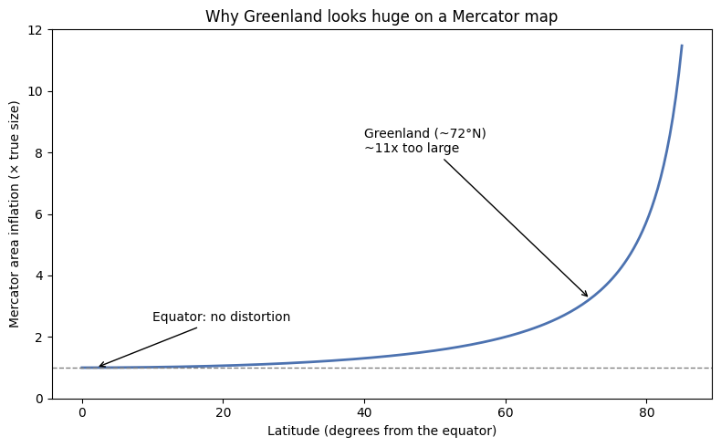

4. Week 3 Lecture Notes#
4.1. GISS/GEOG 361/363: Introduction to Geographic Information Science — Week 3 Lecture Notes#
Unit 3: Coordinate Systems, Projections, and Datums — why location on Earth is complicated
Read this before you open Lab 2. It gives you the ideas behind the coordinate reference system (CRS) choices you’re about to make yourself.
4.2. Welcome Back#
Here’s a scene you will eventually live through yourself: you drag a new layer into QGIS or GeoLibre, and a dialog box pops up — “This layer appears to have no projection specification.” The software is about to guess where your data belongs, and it’s asking you whether that guess is okay.
Has that ever happened to you? It’s one of the most common real-world GIS headaches, and it’s exactly the problem this week untangles. Last week you learned the two basic shapes spatial data comes in — vector and raster. This week is about something underneath both shapes: how a computer knows where on Earth any of it actually is, and what happens when that knowledge is wrong, mismatched, or flattened badly.
Same place as always — Silver City, Grant County, the Gila National Forest — but this week the question isn’t what the data shows. It’s how the data knows where it is at all.
4.3. Learning Goals#
By the end of this lecture, you will be able to:
Define coordinate system (geographic vs. projected) in plain terms
Explain why projections cause distortion, using an analogy
Identify the main types of distortion — shape, area, distance, direction
Connect projection choice to real-world values and community context
Begin to critically question map design decisions
Enduring understandings worth carrying past this week:
Coordinates provide spatial reference and help us locate ourselves in relation to place.
Projections are 2D representations of 3D space, designed through human decisions that reflect priorities, values, and power.
No single projection is perfect, and all projections add distortion. Choosing the right one for the job is what matters.
This lecture does not require any software. Lab 2, right after this, is where you’ll actually define and transform coordinate systems on real data.
4.4. Lecture Slides and Recording#
If you’d rather click through slides or watch/listen instead of reading straight through, use either of these — they cover the same material as the sections below. Everything required for Lab 2 is also here in text, so both are optional.
Slides: (link/embed goes here once posted — see the instructor note in the code cell below for how to get a working embed URL)
Recording: (link/embed goes here once posted — same note applies)
A captioned or transcript version of the recording will also be posted for anyone who needs or prefers it — reach out if it isn’t up yet and you need it before it is.
# OPTIONAL -- embed a Google Slides deck directly in this notebook.
#
# Instructor note: the normal "Share" link will NOT embed correctly. Instead:
# File -> Share -> Publish to web -> Embed -> copy the <iframe src="..."> URL.
# It will look like: https://docs.google.com/presentation/d/e/2PACX-.../embed?start=false&loop=false
#
# Paste that URL below in place of the placeholder.
from IPython.display import IFrame
slides_url = "PASTE_YOUR_PUBLISH_TO_WEB_EMBED_URL_HERE"
IFrame(src=slides_url, width="100%", height=480)
# OPTIONAL -- embed the lecture recording.
#
# Instructor note: the embed URL format depends on where the recording is hosted.
# - YouTube (unlisted is fine): https://www.youtube.com/embed/VIDEO_ID
# - Panopto: use the "Embed" option in the share menu -- it gives an <iframe> URL directly
# - Kaltura: use the "Publish" / "Embed" option in the share menu
# - Zoom cloud recording: Zoom's share links do not embed reliably -- link out instead
# of embedding (see the markdown cell above), or re-host on YouTube/Panopto first.
#
# Paste the correct embed URL below in place of the placeholder.
from IPython.display import IFrame
recording_url = "PASTE_YOUR_RECORDING_EMBED_URL_HERE"
IFrame(src=recording_url, width="100%", height=400)
If either embed above doesn’t load, that’s expected until a real URL replaces the placeholder — and even with a real URL, some notebook environments (Colab, some JupyterHubs) block embedded pages. In that case, use the direct links above the code cells instead.
4.5. 1. Engage — Maps Aren’t Neutral#
Open thetruesize.com and drag a country around. Try Greenland. Try India. Try your home country.
Post your answer to this prompt for yourself before reading on:
“Drag a country — try Greenland, India, or your home country. What do you notice? What surprises you?”
Follow it up with these:
What surprised you?
Why do you think some countries look so much larger or smaller than they really are?
If a place looks bigger on a map, does it feel more important?
4.5.1. Connecting to power and place#
Maps are not neutral mirrors of reality. They are designed objects. The Mercator projection — the one most of us grew up with — was developed for navigation, not to represent the relative size of places. Its continued dominance in classrooms, textbooks, and digital tools shapes what people believe about the world, whether or not that was ever the intent.
Sit with this question for a moment: whose perspective does a map like this center? What regions get made to look small — or large — and what message does that send?
We’ll come back to this at the end. First, let’s figure out the mechanics behind what you just saw.
4.6. 2. Explore — Projection Playground#
Open the PSU Projection Playground.
In the “Plot the Location” box, add these coordinates and label them WNMU:
Longitude: -108.28
Latitude: 32.76
Switch between projections — try Robinson, Mercator, and Albers Equal Area at minimum.
Watch what changes: shape, size, distance, direction.
Pay close attention to the poles versus the equator, and notice which projection makes your region look “right.”
Fill in the blank for yourself as you go:
“When I changed the projection, I noticed ______. My region looked ______.”
Then sit with these:
Which areas change the most when you switch projections?
Is there any projection that feels “neutral” — or is every one a choice?
What happens to Antarctica? To Greenland? To the equatorial belt?
Keep an eye on your own reactions here, too. Did you find yourself thinking of distortion as a bug — something a “good enough” projection should avoid — or as an unavoidable feature of turning a sphere into a flat image? That question is exactly what Section 3 answers next.
4.7. 3. Explain — Coordinate Systems, Projections, and Datums#
4.7.1. Geographic coordinate systems: where is it on the globe?#
A coordinate system is a reference framework that lets us say exactly where something is. The first kind you need is a geographic coordinate system (GCS) — it defines locations directly on the 3D surface of the Earth using spherical coordinates:
Latitude — north–south position, in degrees, from –90° (South Pole) to +90° (North Pole). The equator is 0°, and works like the x-axis of a giant Cartesian plane wrapped around the globe.
Longitude — east–west position, in degrees, from –180° to +180°. The Prime Meridian, through Greenwich, England, is 0°, and works like the y-axis.
Graticule — the full grid formed by every latitude and longitude line together.
A GCS answers exactly one question: where is this on the globe? It works in angular units (degrees) — and because it describes a sphere, it has no straight, evenly-spaced grid lines the way a flat map does. Casually saying “lat/long” like it’s already a flat coordinate system is one of the most common mix-ups in this field.
4.7.2. Datums: why “identical” coordinates can point to different places#
You’re part of a search and rescue team looking for an injured hiker in the Gila National Forest. Her satellite phone reports a location of 33.296° N, –108.3714° W. You plug that into two different basemaps:
Under WGS84 (the default datum for GPS devices) — she’s near a trail clearing. Injured, but reachable.
Under NAD27 (an older datum, common on legacy USGS topo maps) — the same numbers place her hundreds of meters away, on a steep slope in rugged terrain.
Same coordinates. Different real-world locations. The difference is the datum.
A datum is the model of Earth’s shape that a coordinate system measures from — it’s built from two pieces:
Geoid — a model of Earth’s actual, lumpy, gravity-defined shape
Ellipsoid — a smooth mathematical approximation of that shape, simple enough to do math with
Datum = Geoid + Ellipsoid. Every GCS is built on one, and if two datasets use different datums, their coordinates won’t line up — even when the raw numbers look identical.
Datum |
Established |
Notes |
|---|---|---|
NAD27 |
1927 |
Anchored to a single ground point (Meades Ranch, Kansas). Many older USGS topo maps use this. |
NAD83 |
1983 |
Satellite-based update. Can differ from NAD27 by hundreds of meters depending on location. |
WGS84 |
1984 |
Global model. Default for GPS devices. Nearly identical to NAD83 for most U.S. mapping. |
This is exactly the kind of mismatch behind that “This layer appears to have no projection specification” warning box you may have already seen pop up in QGIS or another GIS tool — the software is telling you it can’t safely assume where the data belongs, and it’s asking you to make that call. Lab 2 will have you make that call for real.
4.7.3. Projected coordinate systems: flattening a sphere#
A GCS tells you where something is on a curved Earth. A projected coordinate system (PCS) tells the data how to draw itself on a flat surface — a paper map or a computer screen — using Cartesian (x, y) coordinates in linear units, like meters or feet.
Peel an orange. Now try to lay that peel flat on a table without tearing or stretching it.
You can’t. That’s exactly the problem every mapmaker faces.
A map projection decides where to tear — which parts of the world get stretched, and which stay accurate. There is no projection that avoids this entirely, because you cannot flatten a sphere without distortion of some kind. Every PCS is built on top of a GCS — first you define where something is on the globe, then you project it flat. They work together, not as alternatives to each other.
4.7.4. Three ways to make that tear#
Every projection surface touches (or slices through) the globe somewhere, and distortion is always lowest right at that line of contact — called the tangent case if it touches at a single point or line, or the secant case if it cuts through the globe along two lines.
Surface |
How it works |
Best suited for |
|---|---|---|
Planar (azimuthal) |
A flat plane touches the globe at a single point |
Polar regions |
Cylindrical |
A cylinder wraps around the globe, then unrolls flat |
Equatorial regions (e.g., Mercator) |
Conical |
A cone sits on the globe, then unfolds flat |
Mid-latitude regions (e.g., Albers) |
You’ll notice New Mexico sits solidly in the mid-latitudes — which is part of why conical projections like Albers Equal Area show up so often in statewide New Mexico mapping work.
4.7.5. Every projection distorts something#
You cannot flatten a sphere without distortion. Every projection preserves some properties and sacrifices others — there are four candidates, and no projection protects all four at once:
Property preserved |
Called |
What gets sacrificed |
Example / typical use |
|---|---|---|---|
Shape |
Conformal |
Area |
Mercator — navigation, web mapping |
Area |
Equal-Area |
Shape / angle |
Mollweide, Albers — global comparison, ecology, climate |
Distance |
Equidistant |
Other distances |
Azimuthal Equidistant — aviation, seismic analysis |
Direction |
Azimuthal |
Area & shape |
True direction from a point — polar navigation |
This is also the moment to name a few common misconceptions directly, since all three are easy to fall into:
“Bigger on the map means bigger in real life.” Not necessarily — on a conformal projection like Mercator, area is exactly what’s being sacrificed. This is the entire premise behind thetruesize.com’s country-dragging demo: Greenland looks continent-sized next to Africa on a standard web map, but Africa is actually about 14 times larger.
“Maps are objective.” A map is a set of choices, not a neutral photograph — this is exactly what Section 1’s Mercator discussion was pointing at.
“GPS = a coordinate system.” GPS devices output coordinates in WGS84, which is a datum, not a projection. It’s still a GCS (angular, degrees) until something projects it onto a flat map.
“Lat/long is a coordinate system with a grid.” Technically, latitude/longitude is an angular reference on a sphere — it doesn’t have the straight, evenly-spaced grid lines a true flat coordinate system has.
4.8. 4. Elaborate — Choosing a CRS for Your Place#
Prompt: “You are mapping your community. What projection would you choose — and what does your choice say about what matters most to you?”
A useful two-question shortcut, whichever project you’re working on:
What are you doing — collecting location data in the field (GPS, fieldwork), or making a map for analysis and communication?
Then decide — GCS (lat/long) for storing and collecting raw location; PCS (a flat, projected system) for measuring distances, areas, and making a legible map.
4.8.1. Three common systems for New Mexico projects#
In practice, almost everything you do in this course will use one of three projected coordinate systems. Knowing them by name — and by EPSG code — will save you real debugging time in Lab 2 and beyond.
System |
Full name |
Zones / coverage |
Units |
Typical use |
|---|---|---|---|---|
UTM |
Universal Transverse Mercator |
60 zones, each 6° wide, global coverage to 84°N/S |
Meters |
Scientific fieldwork; NM sits mostly in Zone 13N |
State Plane |
State Plane Coordinate System |
120 zones nationwide, following county boundaries |
Feet or meters |
High-accuracy local mapping (NM has Central, East, and West zones) |
Web Mercator |
EPSG:3857 |
Global |
Meters (distorted) |
The de facto standard for web map tiles — Google Maps, ArcGIS Online, OpenStreetMap |
State Plane is roughly four times more accurate than UTM for local work, at the cost of only covering a small area — the same shape/area/distance/direction trade-off from Section 3’s Explain block, just applied to a practical choice instead of an abstract property.
4.8.2. Matching the system to the task#
Scenario |
What matters most |
Likely best fit |
|---|---|---|
Mapping city infrastructure (roads, utilities) |
Accurate distance and local shape |
State Plane or UTM |
Showing global climate impact on a region |
Accurate area, for fair comparison |
Equal-area projection (Albers, Mollweide) |
Building a web map of your neighborhood |
Compatibility, seamless tiles |
Web Mercator (EPSG:3857) |
Navigation or compass bearings |
Correct angles and direction |
Conformal (Mercator) |
4.9. 5. Evaluate — Exit Reflection#
Prompt: “What is one reason all maps are imperfect — and what is one thing you would want to question the next time you see a map?”
Optional poll — why are all maps imperfect?
A. Technology limits
B. Earth is round
C. Human decisions
D. All of the above ✓
The correct answer is D, but B and C are doing the real work here. The Earth’s shape forces distortion on every flat map — that part is physics, not opinion. But which distortion a given map lives with, and who that choice serves, is a human decision every time. Choosing a coordinate system is both a technical decision and a values-based one.
4.9.1. Extend (optional, beyond this week)#
If this line of thinking interested you: keep pulling on it. Explore how map projections carry connotations of positionality and power — whose land is centered, whose is pushed to the edges or cut off entirely, and why the “default” view of the world so many of us grew up with was never actually neutral to begin with. This is the same habit from Week 2’s discussion of the Silver City ownership mosaic, applied one level deeper: every dataset, and every design choice about how to draw it, was made by someone, for a purpose.
4.10. 6. Getting Ready for Lab 2#
A few things to know before you open the lab notebook:
You’ll work hands-on with real CRS mismatches — the same “this layer has no projection specification” situation described in Section 1, encountered live in your GIS tool of choice.
You’ll define and transform coordinate systems, moving data between a GCS and a PCS, and between different projected systems (e.g., UTM Zone 13N ↔ State Plane NM ↔ Web Mercator).
You’ll work with EPSG codes — the short numeric IDs (like EPSG:4326 for WGS84, or EPSG:3857 for Web Mercator) that GIS software uses to identify a CRS precisely, instead of relying on a name alone.
Keep this week’s two-question shortcut handy: what are you doing (collecting vs. mapping), and does your priority match shape, area, distance, or direction?
Keep last week’s habit going too: before you trust a layer’s coordinates, ask what CRS it’s actually in — don’t assume.
4.10.1. Before You Move On: Quick Reflection#
Take two minutes with these — you’ll expand on them in Lab 2, so a rough first pass is all you need here.
In your own words, what’s the difference between a datum and a projection? (Hint: one answers “where,” the other answers “how to draw it.”)
If you were designing a map for your own community, what would you want to prioritize — shape, area, distance, or direction — and which coordinate system would fit that priority?
Pick one everyday map you use often (a phone map app, a hiking app, a printed atlas). What coordinate system is it probably using, and why does that make sense for its purpose?
Your answers (double-click this cell to edit):
4.10.2. 📎 Resources#
The True Size Of — compare country sizes under Mercator distortion — https://thetruesize.com/
PSU Projection Playground — explore and compare projections interactively — https://projections.mgis.psu.edu/
ArcGIS StoryMap: GIS Module 9 — Coordinate Systems (Dr. Amber Ignatius, KSU/UNG OER Materials) — clear visuals for graticules, projection surfaces, and distortion
USGS — Teaching About and Using Coordinate Systems (2013)
EPSG.io — look up EPSG codes and CRS details for any dataset — https://epsg.io/
National Geographic MapMaker — https://mapmaker.nationalgeographic.org/
4.11. Summary#
Locating something in GIS actually takes two separate decisions stacked on top of each other. First, a geographic coordinate system (GCS) defines where a point sits on the curved Earth, using latitude/longitude in degrees, resting on a datum — a model of Earth’s shape. Mixing up datums (NAD27 vs. NAD83 vs. WGS84) can shift a location by hundreds of meters even though the raw coordinates look unchanged. Second, a projected coordinate system (PCS) defines how that same location gets drawn onto a flat surface, using linear units like meters — and because you can’t flatten a sphere without distortion, every projection has to sacrifice at least one of four properties: shape, area, distance, or direction.
In New Mexico, that mostly plays out across three practical systems — UTM Zone 13N for fieldwork, State Plane for high-accuracy local mapping, and Web Mercator for anything headed to the web — and picking the right one comes down to two questions: what are you doing with the data, and which property matters most for that purpose.
None of this is only technical. The Mercator projection’s continued dominance in classrooms and web maps has shaped what generations of people believe about the relative size of the world’s regions — a reminder that a coordinate system is also, always, a choice about whose view of the world gets centered.
You’re ready for Lab 2.
4.12. Appendix: Two Optional Interactive Demos#
Everything above this line is all you need for this week. The two cells below are optional extras — small, self-contained demos of ideas from this lecture, built in Python. Skip them, come back later, or run them now if you’re curious. Nothing here is graded.
# OPTIONAL -- a simple illustration of Mercator's area distortion by latitude (Sections 1 & 3).
# No real data or extra installs needed -- matplotlib and numpy are enough.
import matplotlib.pyplot as plt
import numpy as np
lat_deg = np.linspace(0, 85, 200)
lat_rad = np.radians(lat_deg)
# Mercator's area scale factor grows as 1 / cos(latitude) -- it's exact for
# an infinitesimal patch, and it's why high-latitude places look enormous.
scale_factor = 1 / np.cos(lat_rad)
fig, ax = plt.subplots(figsize=(8, 5))
ax.plot(lat_deg, scale_factor, color="#4C72B0", linewidth=2)
ax.axhline(1, color="gray", linestyle="--", linewidth=1)
ax.set_xlabel("Latitude (degrees from the equator)")
ax.set_ylabel("Mercator area inflation (× true size)")
ax.set_title("Why Greenland looks huge on a Mercator map")
ax.set_ylim(0, 12)
ax.annotate("Greenland (~72°N)\n~11x too large", xy=(72, 1/np.cos(np.radians(72))),
xytext=(40, 8), arrowprops=dict(arrowstyle="->", color="black"))
ax.annotate("Equator: no distortion", xy=(2, 1), xytext=(10, 2.5),
arrowprops=dict(arrowstyle="->", color="black"))
plt.tight_layout()
plt.show()
print("At the equator, Mercator shows true area. By 60 degrees latitude, area is")
print("inflated 2x. By 80 degrees, it is inflated nearly 6x. This is the same")
print("effect thetruesize.com lets you see directly by dragging countries around.")

At the equator, Mercator shows true area. By 60 degrees latitude, area is
inflated 2x. By 80 degrees, it is inflated nearly 6x. This is the same
effect thetruesize.com lets you see directly by dragging countries around.
# OPTIONAL -- a tiny interactive CRS chooser for Section 5.
# Uses ipywidgets, which ships with most Jupyter/Colab environments already.
# If it's missing, uncomment the line below:
# !pip install ipywidgets -q
import ipywidgets as widgets
from IPython.display import display
scenarios = {
"Mapping city infrastructure (roads, utilities)":
"State Plane or UTM Zone 13N. Priority: accurate local distance and shape.",
"Showing global climate impact on your region":
"An equal-area projection (Albers, Mollweide). Priority: accurate area for fair comparison.",
"Building a web map of your neighborhood":
"Web Mercator (EPSG:3857). Priority: compatibility with seamless web map tiles.",
"Navigation or compass bearings":
"A conformal projection (Mercator). Priority: correct angles and direction.",
"Collecting GPS points in the field":
"A GCS in WGS84 (EPSG:4326). Priority: consistent global location, not measurement.",
}
dropdown = widgets.Dropdown(options=list(scenarios.keys()), description="Task:")
output = widgets.Output()
def on_change(change):
with output:
output.clear_output()
print(scenarios[change["new"]])
dropdown.observe(on_change, names="value")
display(dropdown, output)
with output:
print(scenarios[dropdown.value])
That’s it for Week 3 lecture notes. When you’re ready, head to Lab 2 and start defining and transforming coordinate systems on real data.